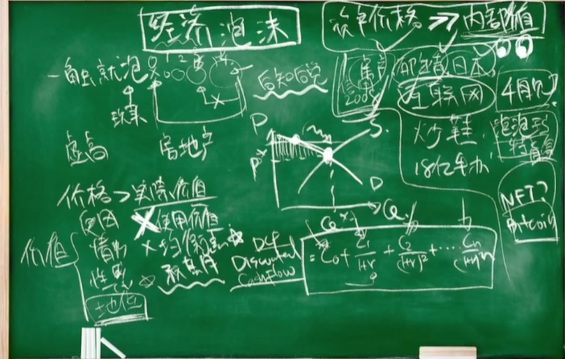
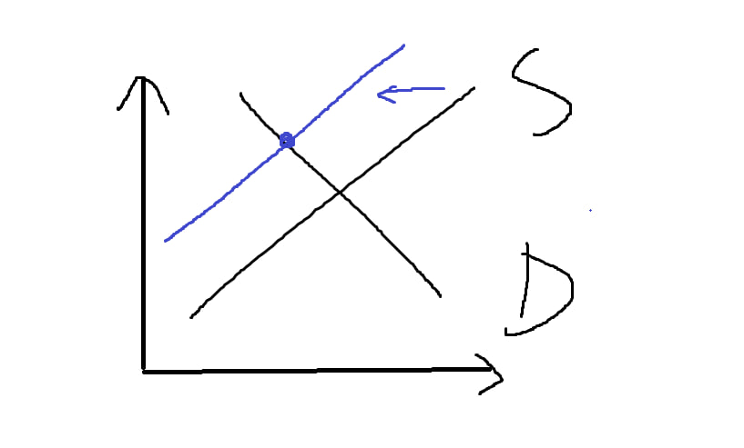

泡沫经济学
通俗易懂的经济泡沫
价值包括使用价值，情绪价值，性感资本，地位价值
- 简单的介绍，详情请见《行为金融》
泡沫特性：后知后觉,戳破的了才是泡沫
- 资产价格 >> 内部价值就形成了泡沫 形成泡沫的资产要有如下特点
- 资产新颖
- 独特
- 稀有
举例：2008的信贷危机，郁金香，2019-2020的Dot-com
内部价值有一个客观存在的方式可以计算，也就是估值方法（valuation methodology）比如
- DCF，现金可以用现金流法，
- 可以用cost method（成本法），
- comparable对比法
- trading comparable是可比公司分析法下的交易倍数
- transaction multiples是可比交易分析法下的交易倍数
小练习：一个手办在我国卖￥2000 在阿根廷卖￥4000，已知阿根廷的通货膨胀率是百分百，请问是通货膨胀吗？ - 不是
现在不确定是不是泡沫的：bitcoin，nft，泡泡玛特
- 比特币这种东西内部价值就很难算，因为它不产生现金流（一般比较难算的东西都是不产生现金流的，如果能产生现金流一般很难产生泡沫，但也会产生泡沫。

形成的外因？
- 社会因素，而不是供需关系，不过会包括焦虑（羊群效应）
- 恶意操作
- 有了很多钱
- 菜鸡
泡沫的破灭
行为经济学的的前景理论：一个人走在马路上丢了100块的痛苦是要远大于走在马路上捡到100块的快乐,所以有人觉得要跌了肯定不会产生羊群效应戳破泡沫
供应链断裂肯定也不是，画一个简单的供求曲线可以看出，供应链左移，均衡点会上升 
可能的原因：
- 政府
- DDL截至日期
- 不再稀有，受人诟病，产生柠檬市场了
- 饱和了，比如投资比特币，没钱有新的钱进来，没有新的钱，就没新的交易，泡沫就破了
🌷历史上的郁金香
开局荷兰郁金香，有钱人还是把钱放在理性的投资产品，经历黑死病，人们金币就多了，普通人没银行卡投资股票，所以普通人就会把全部身价投入郁金香，郁金香就成了一种金融产品，一种期货
最后
不过就算专门研究泡沫的也很难逃离泡沫，比如股市大涨，通货膨胀那么高，美联储一直在加息，口罩也已经放开了，莫名其妙，就是因为一个不能商用的科技，跟这个科技没关的股票也在upup，但这时候你能做空吗？甚至现在不参与都是个大傻子，因为你身边的人都在这个泡沫里赚了很多钱了
本博客所有文章除特别声明外，均采用 CC BY-NC-SA 4.0 许可协议。转载请注明来自 鲷鱼烧！